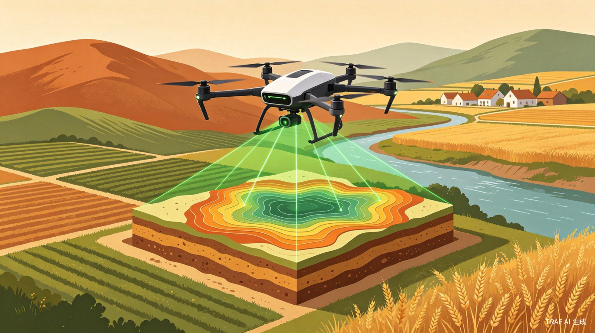
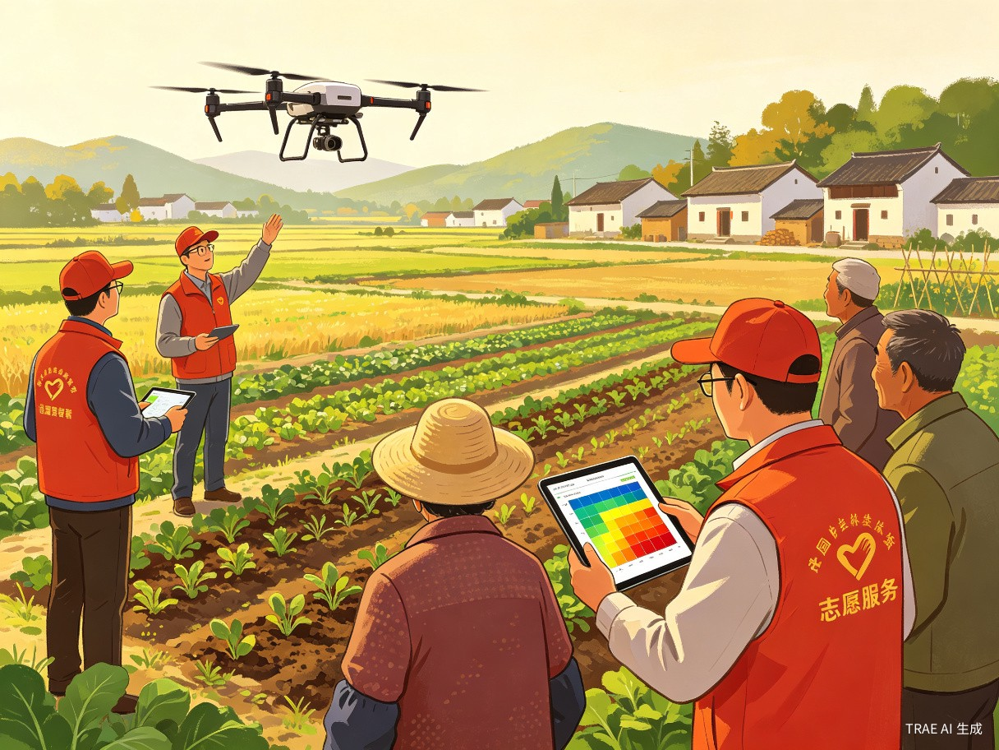
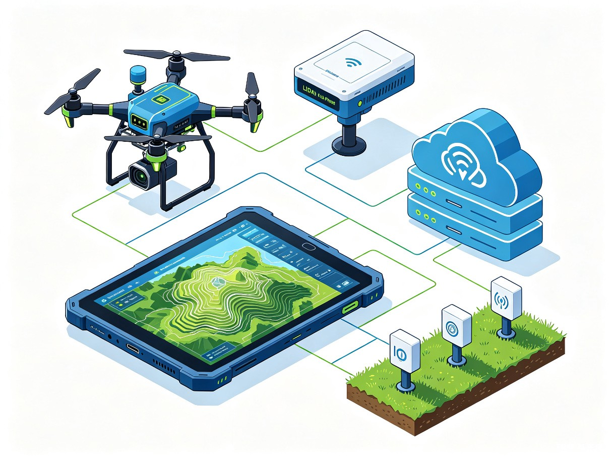
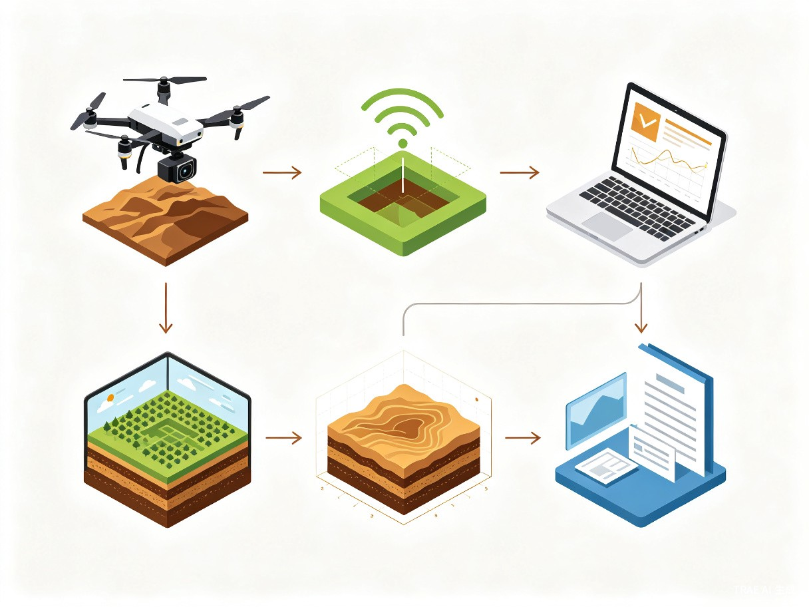
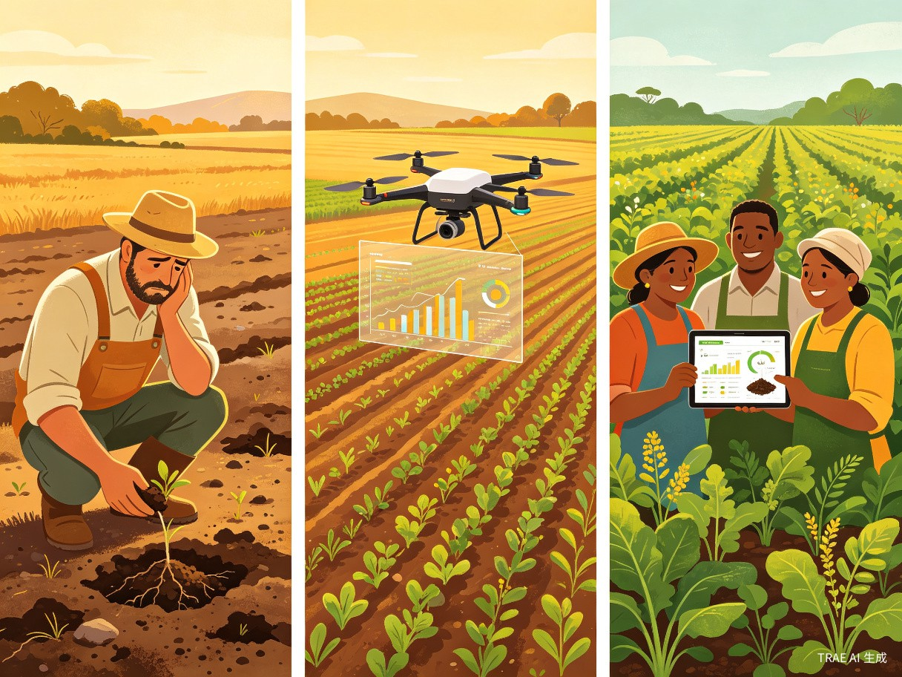

智壤卫士是一套集无人机地形数据采集、高精度GPS定位、拍照留样、土质岩层数据分析、3D地貌生成于一体的社会化服务平台。通过搭载北斗/GPS双模定位模块和高清航拍相机的无人机，对目标区域进行厘米级精度的快速扫描与实景记录，结合AI算法对土壤成分、岩层结构、地形地貌进行智能分析，最终生成带实景纹理的可视化3D地貌模型和专业检测报告，服务于农业规划、灾害预警、生态修复等社会公益场景。
我国广大农村和偏远地区长期面临土质检测成本高、周期长、覆盖面不足的困境。传统人工采样方式效率低下，一份完整的土壤检测报告往往需要数周时间，且单次检测费用高昂，基层农业合作社和乡镇政府难以承担。同时，地质灾害（滑坡、泥石流）的早期预警缺乏高精度地形数据支撑，导致防灾减灾工作被动滞后。
灵感来源于近年来频发的极端天气引发的地质灾害事件，以及乡村振兴战略对精准农业的迫切需求。无人机技术的成熟和成本的持续下降，使得"天空地一体化"数据采集成为可能。我们希望将先进的硬件技术与AI分析能力结合，打造一个低门槛、高效率的社会服务平台，让科技真正惠及基层。
智壤卫士是一个硬件+软件+云平台的综合系统：硬件端为搭载多光谱相机、LiDAR激光雷达、土壤探针传感器、北斗/GPS双模高精度定位模块和2000万像素高清航拍相机的无人机采集终端；软件端为支持数据读取、质量检测、GPS航迹记录、拍照留样管理和3D地貌生成的本地处理客户端；云平台端为提供报告共享、历史数据对比和公益协作的Web服务平台。
需要了解耕地土质状况以优化种植方案，但缺乏专业检测能力和预算。
负责辖区内的地质灾害监测、土地规划和生态保护，需要精准的地形数据。
参与灾后重建、生态修复项目，需要快速获取受灾区域的地貌和土质数据。
进行土壤研究、作物适应性分析，需要大范围、多时相的地形与土质数据。


| 硬件模块 | 功能说明 | 关键指标 |
|---|---|---|
| 多光谱相机 | 采集地表植被指数与土壤光谱信息 | 5波段，分辨率 2cm/pixel |
| 高清航拍相机 | 拍照留样，记录采样点实景影像 | 2000万像素，4K视频，机械防抖 |
| LiDAR激光雷达 | 获取高精度三维点云数据 | 测距精度 ±2cm，点密度 100pts/m² |
| 土壤探针传感器 | 检测土壤含水量、pH值、电导率 | 采样深度 0-30cm，精度 ±0.1 |
| 高精度GPS/RTK | 提供厘米级定位基准，自动记录航迹 | 水平精度 ±1cm，垂直精度 ±2cm，支持北斗/GPS双模 |
| 边缘计算模块 | 实时数据预处理与质量检测 | NPU 8TOPS，支持TensorFlow Lite |
智壤卫士搭载北斗/GPS双模高精度定位模块，配合地面RTK基准站，实现厘米级定位精度。每一帧传感器数据都自动绑定精确的地理坐标，确保采集点位、拍照留样、土壤探针读数与地理位置一一对应，为后续的数据分析和报告生成提供可靠的空间基准。
飞行过程中自动记录无人机航迹，生成飞行轨迹图，便于回溯检查覆盖范围和遗漏区域。
每次土壤探针检测和拍照留样时，系统自动记录精确坐标，生成带位置信息的采样点分布图。
多传感器数据通过统一时间戳和GPS坐标进行同步校准，确保多源数据在空间上精确对齐。
预加载离线地形图，无网络环境下仍可正常定位和导航，适应偏远山区作业场景。
系统配备2000万像素高清航拍相机，支持自动和手动两种拍照模式。在飞行航线中，无人机可按预设间隔自动拍摄地面实景照片；在检测到异常土质区域时，操作员可手动触发拍照，记录关键采样点的真实地貌。所有照片自动嵌入GPS坐标、拍摄时间和传感器读数，形成完整的"影像-数据-位置"三位一体证据链。
按预设航线和间隔自动拍摄，覆盖整个检测区域，确保无遗漏，效率提升5倍。
检测到异常数据时自动悬停，操作员可手动调整角度拍摄细节，记录关键证据。
航拍照片与多光谱数据、LiDAR点云自动配准，生成带实景纹理的3D地貌模型。
同区域多次检测的影像自动归档，支持时间轴对比，直观展示土质和地貌变化。

基于多光谱数据与机器学习模型，自动识别土壤类型（壤土、砂土、黏土等），准确率达92%。
通过LiDAR点云数据反演地下岩层分布，识别潜在地质风险区域。
融合多源数据生成厘米级精度的三维地形模型，支持任意角度浏览与剖面分析。
自动检测数据完整性、精度和一致性，标记异常数据并提示补采。
在干旱、洪涝、地震、泥石流、台风等自然灾害发生时，通信基础设施往往遭到严重破坏，灾区与外界的联系中断。智壤卫士无人机具备极端环境自主作业与应急通信中继能力，在无地面网络覆盖的情况下，仍能执行灾区侦察任务并将关键信息实时回传至指挥中心。
搭载北斗短报文通信模块和卫星数据链，在地面基站全部损毁的情况下，通过卫星通道将灾区影像、GPS坐标、传感器数据回传至云端。
无人机飞入灾区后自动执行预设航线侦察任务，实时拍摄受灾区域高清影像，标记道路损毁、建筑倒塌、农田淹没等关键灾情点。
多光谱相机实时监测土壤含水量和植被健康指数，自动识别干旱区域和积水区域，生成灾情分布热力图，辅助救灾物资精准投放。
地震发生后，无人机第一时间升空对震中区域进行三维扫描，与灾前3D地貌模型对比，自动计算地表形变量，评估滑坡和建筑损毁风险。
无人机悬停于高空作为临时通信中继站，为灾区救援队伍提供局部通信覆盖，打通"信息孤岛"，保障救援指挥链畅通。
系统检测到异常地质数据（如地表裂缝扩展、水位骤升）时，自动触发SOS告警，通过卫星链路向应急管理部门推送精确位置和灾情摘要。
| 灾害类型 | 监测指标 | 回传数据 | 响应时效 |
|---|---|---|---|
| 洪涝 | 土壤含水量、水位变化、积水面积 | 积水区域热力图、淹没范围影像 | 起飞后15分钟内首份数据 |
| 干旱 | 植被指数NDVI、土壤湿度 | 干旱等级分布图、受影响农田面积 | 单次飞行覆盖5000亩 |
| 地震 | 地表形变、建筑倾斜、裂缝扩展 | 震前/震后3D对比模型、损毁评估 | 震后30分钟内升空侦察 |
| 泥石流/滑坡 | 地表位移、岩层稳定性 | 滑坡体体积估算、威胁区域标注 | 连续监测，实时预警 |
| 台风 | 风速风向、作物倒伏面积 | 受灾农田影像、倒伏率统计 | 风后2小时内完成初查 |
智壤卫士将专业级土质检测能力以公益服务的形式下沉到基层，打破技术壁垒，让偏远地区的农业合作社和乡镇政府也能享受到先进的数字化服务。通过建立共享数据平台，促进区域间的农业经验交流和灾害联防联控，切实服务于乡村振兴和防灾减灾等国家战略。
在干旱、洪涝、地震等极端自然灾害面前，智壤卫士无人机能够在通信中断的"信息孤岛"中独立作业，通过北斗卫星短报文和卫星数据链将灾区影像、GPS坐标、传感器数据实时回传指挥中心，为应急救援争取黄金时间。灾前提供预警监测，灾中提供实时侦察和通信中继，灾后提供快速评估和重建规划数据，形成完整的"预警-侦察-评估-重建"灾害应对闭环。
相比传统人工采样，无人机采集效率提升10倍以上，单次飞行可覆盖数百亩区域。结合边缘计算实时处理，数据质量检测在采集过程中同步完成，大幅减少返工。3D地貌模型自动生成，将原本需要数天的建模工作压缩至数小时，为应急决策争取宝贵时间。
智壤卫士构建"硬件销售+软件订阅+数据服务"三位一体的商业模式，实现可持续盈利：
向政府部门、农业企业、测绘机构销售搭载全套传感器的无人机采集终端及RTK地面基站，提供设备租赁服务。
云平台按年/按月收取SaaS订阅费，基础版免费，专业版和企业版提供高级分析与定制报告功能。
为土地确权、项目验收、保险理赔等场景提供标准化数据报告，按项目或按面积收取数据处理服务费。
承接自然资源局、农业农村局的土地调查、确权登记、灾害评估等政府采购项目。
智壤卫士采集的厘米级精度地形数据与实景影像，可直接作为土地整理、高标准农田建设、生态修复等工程项目的验收依据。系统自动生成符合国家测绘标准的检测报告，包含坐标系统、精度指标、影像图件等完整要素，大幅缩短项目验收周期，降低第三方测绘成本。数据支持导出为国土调查标准格式（Shapefile、GeoJSON），无缝对接自然资源部门的业务系统。
系统内置国家2000坐标系和地方坐标系自动转换功能，支持CGCS2000、北京54、西安80等主流坐标系之间的无损转换。采集数据自动匹配国家土地调查数据库标准，生成符合《地籍调查规程》和《土地利用现状分类》国标的成果资料，为土地确权登记、流转交易、抵押融资提供权威数据支撑。
传统人工丈量土地存在"大小亩"问题（实际面积与账面面积不符），是农村土地纠纷的主要根源。智壤卫士通过高精度GPS/RTK定位和LiDAR三维扫描，实现土地面积测量精度达到±0.1%，彻底消除人为误差。系统自动生成带边界坐标的宗地图，支持不规则地块的精确计算，为土地确权、承包合同签订、流转交易提供公正、可信的面积数据，从源头预防土地纠纷。

完成无人机传感器集成与飞控调试，开发数据采集与3D重建原型系统，在1-2个试点村庄完成验证飞行。
上线Web服务平台，实现数据上传、自动分析、报告生成和共享功能。接入高精度GPS RTK基站网络。
与3-5个县市的农业局和公益组织建立合作，培训志愿者操作团队，完成首批100个村庄的公益检测服务。
开放API接口，接入第三方传感器和农业管理系统。建立区域土质数据库，支持科研合作和政府决策。
智壤卫士致力于用科技的力量守护大地，以社会服务为初心，让先进的土质检测和地形分析技术惠及每一个需要帮助的角落。